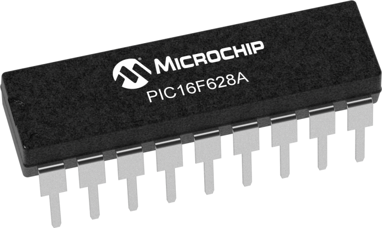
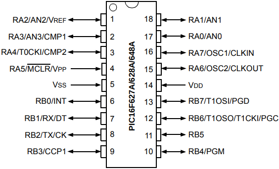
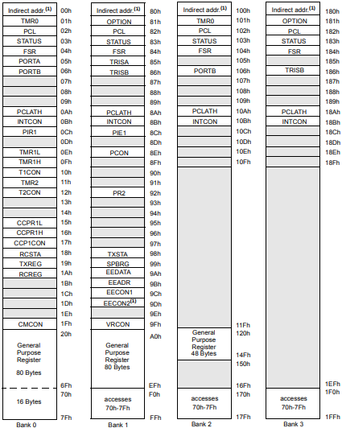

Episódio 1: Conhecendo o invólucro do componente, a pinagem, o diagrama de blocos e a tabela de memoria do PIC16F628A
O microcontrolador PIC16F628A, conforme o datasheet disponível em Microchip (2020a) tem as seguintes características:
- clock de operação até 20 MHz;
- 8 níveis de pilha;
- apenas 35 instruções;
- oscilador interno de 4 MHz ou de 48 kHz (para baixo consumo);
- modo dormir (sleep) para economia de energia;
- programação dos estados de pull-up sobre os pinos em PORTB;
- tensão de operação de 2 a 5,5 volts;
- 16 pinos de entrada/saída;
- 1 módulo comparador com 2 comparadores analógicos;
- 3 módulos de temporizadores/contadores com 2 módulos de 8 bits e 1 de 16 bitscom suas diferenças;
- 1 módulo de capturar (16 bits), comparar (16 bits) e PWM (10 bits);
- 1 módulo de comunicação USART;
- 2048 palavras de memória de programa;
- 224 bytes de memória SRAM (dados);
- 128 bytes de memória EEPROM (dados);
Na mesma documentação, encontram-se os modelos de encapsulamentos disponíveis para o PIC16F628A, os quais são PDIP, SOIC, SSOP e QFN. Nesta sequência de episódios, baseamos o estudo no encapsulamento PDIP (Plastic Dual In-line Package) de 18 pinos conforme Figura 1.1 e Figura 1.2.
| Figura 1.1 - PIC16F628A com invólucro PDIP |
|---|
|  |
| Fonte: Microchip (2020a) |
| Figura 1.2 - Pinagem do PIC16F628A |
|---|
|  |
| Fonte: Microchip (2020b) pag. 4 |
O PIC16F628A é um microcontrolador com arquitetura RISC(Reduced Instruction Set Computer) e conforme Wikipedia (2020), esse tipo de arquitetura é favorecida por um conjunto simples e pequeno de instruções no qual levam aproximadamente a mesma quantidade de tempo para serem executadas, e elas podem ser vistas na Figura 1.3.
| Figura 1.3 - Conjuntos de instruções assembly para PIC16F628A |
|---|

|
| Fonte: Microchip 2020 (b) pag. 118 |
Esse conjunto de instruções reduzidas, são separadas em instruções com bytes associados a registradores, com bits de registradores, literais (números de 8 bits) diretamente e instruções de controle de fluxo de rotinas entre outros.
Outra qualidade do PIC16F628A é o seu controle através de registradores disponíveis em quatro bancos de memória (Bank 0, Bank 1, Bank 2 e Bank 3) e exibido na Figura 1.4.
| Figura 1.4 - Mapa de memória de dados |
|---|
|  |
| Fonte: Microchip 2020 (b) pag. 118 |
Além dos registradores para controle do microcontrolador, há disponíveis também registradores para uso geral (general purpose register), que utilizaremos para armazenar estados, quantidades e outros valores relativos a lógica de programação que abordaremos com exemplos nestes episódios.
O relacionamento entre as estruturas internas do PIC16F628A e seus módulos podem ser vistos na Figura 1.5, a qual abordaremos todos os módulos disponíveis através de exemplos práticos.
| Figura 1.5 - Diagrama de blocos |
|---|

|
| Fonte: Microchip 2020 (b) pag. 12 |
No próximo episódio veremos como criar nosso primeiro projeto e entenderemos o relacionamento dos códigos com o microcontrolador PIC16F628A.